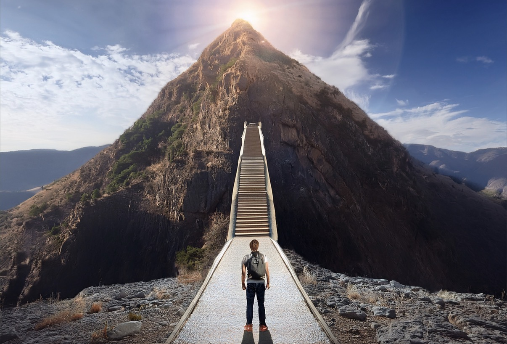

Your hand grabs the rail and your feet begin to go up the stairs, you hear your mom calling you over and over again, "VEN! VEN! MIRA QUE ENCONTRE!" (COME! COME! LOOK WHAT I FOUND!). You naturally start running towards her, as you get higher to the top the sky becomes dark. You look behind you and you see the walls of the mountain begin to shut. Confused as to what is occuring you look back straight to where your mom was just a second ago. You see she's gone, but the pile of gold is still there, slowly losing its shining bright light. You eventually reach the top and you find yourself alone in the dark with nowhere to escape.